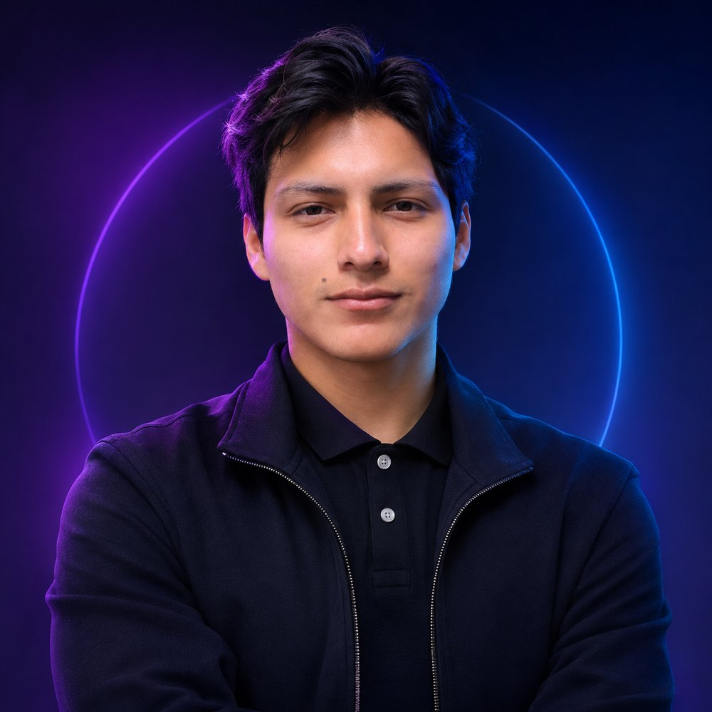
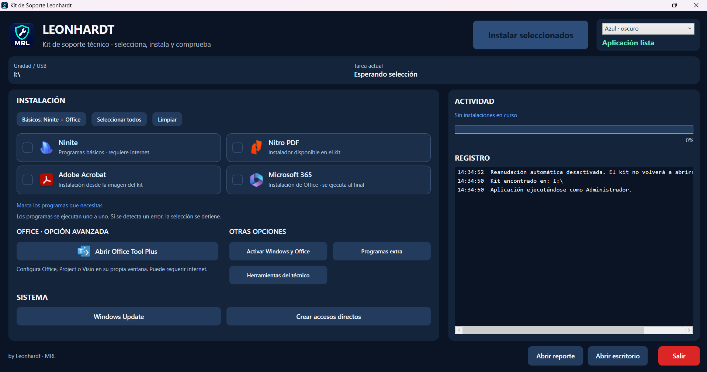
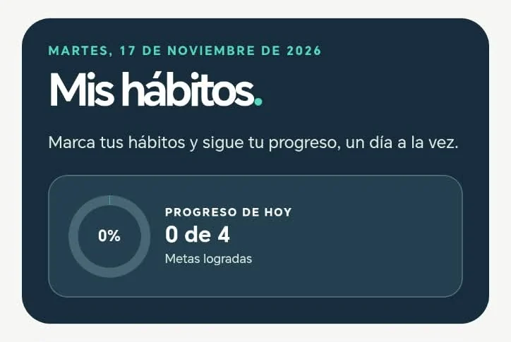
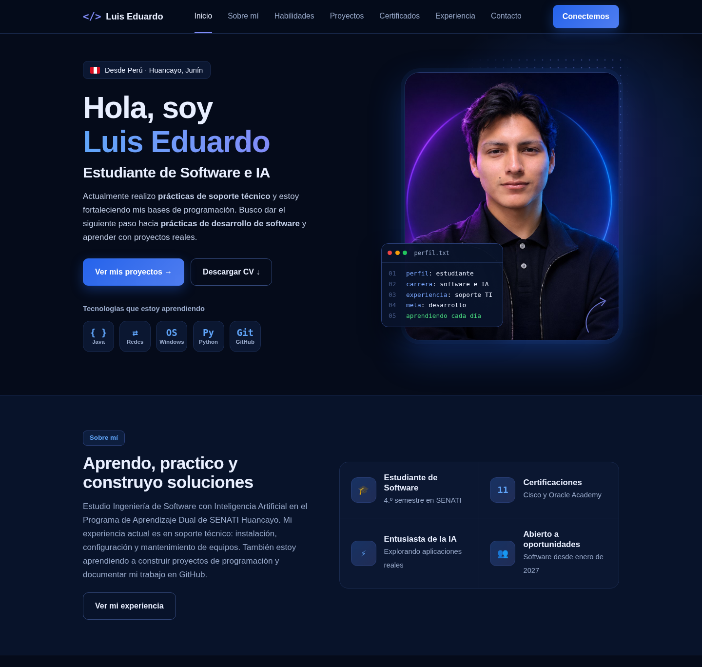

public class Main {
void saludar() {
System.out.println("Hola");
}
}
void saludar() {
System.out.println("Hola");
}
}
Java Foundations
Fundamentos de programación orientada a objetos con Oracle Academy.
Ver certificado ↗Actualmente realizo prácticas de soporte técnico y estoy fortaleciendo mis bases de programación. Busco dar el siguiente paso hacia prácticas de desarrollo de software.
Tecnologías que estoy aprendiendo

Estudio Ingeniería de Software con Inteligencia Artificial en el Programa de Aprendizaje Dual de SENATI Huancayo. Mi experiencia actual es en soporte técnico: instalación, configuración y mantenimiento de equipos.
Ver mi experienciaSENATI C.F.P. Huancayo · Programa de Aprendizaje Dual
Experiencia práctica y tecnologías en aprendizaje, sin porcentajes arbitrarios.
Tareas y herramientas que he utilizado, principalmente en soporte técnico y automatización.
Tecnologías que estoy estudiando o practicando en proyectos de aprendizaje.
Organizada por la Presidencia del Consejo de Ministros (PCM), del 12 al 14 de junio de 2026. Presenté una propuesta de solución a un desafío de innovación digital para resolver problemas reales de entidades públicas.
Fundamentos de programación orientada a objetos con Oracle Academy.
Ver certificado ↗Cómo se conectan y comunican los dispositivos en una red.
Ver certificado ↗Las certificaciones se muestran aquí. Si no aparecen, comprueba que JavaScript esté habilitado.
También estoy preparando repositorios públicos de código, documentación y capturas para mostrar los avances de mis proyectos.
Experiencias de aprendizaje y automatización que estoy desarrollando y documentando.

Herramienta de escritorio para automatizar tareas de soporte Windows. En desarrollo.

Prototipo Android con registro diario, rachas e historial visual. En desarrollo.

Portafolio bilingüe con certificados y proyectos.
Más adelante añadiré repositorios de código y demostraciones verificables de cada proyecto.
Prácticas en soporte técnico, aplicando mis conocimientos de hardware, redes y herramientas digitales.
Toma de pedidos y apoyo en el servicio de mesas.
Manejo de pedidos y apoyo en el salón.
Caja, control de inventario y orden de mercadería.
Estoy buscando oportunidades de prácticas en desarrollo de software, preferentemente remotas, para aprender y aportar a un equipo técnico.